Ginger Lemonade
- 25 mlGinger Shot
- 150–200 mlapă minerală carbogazoasă
- după gustgheață
O limonadă răcoritoare, cu gust intens de ghimbir și lămâie.

100 ml · ghimbir & lămâie · 4 porții
Îmbuteliat11.11.2026 Valabil până la18.11.2026
Sticla de 100 ml se bea în 4 reprize, câte 25 ml. Rece sau cald — amândouă merg.
O limonadă răcoritoare, cu gust intens de ghimbir și lămâie.
O băutură caldă, citrică și reconfortantă.
4 porții dintr-o singură sticlă
Ghimbirul proaspăt conține gingeroli — compușii care îi dau gustul iute și aroma caldă. Lămâia stoarsă pe loc aduce prospețime, aciditate și vitamina C.
Atât. Nimic altceva nu intră în sticlă: fără apă, fără sirop, fără îndulcitori.
Din 2016, Rozmarin Café înseamnă gust autentic, ingrediente atent alese și respect pentru mâncarea bună.
Sucul este crud și nepasteurizat. Ține-l la frigider și consumă-l în 7 zile de la îmbuteliere — data este indicată mai sus. Agită bine înainte de a turna — ghimbirul se așază.